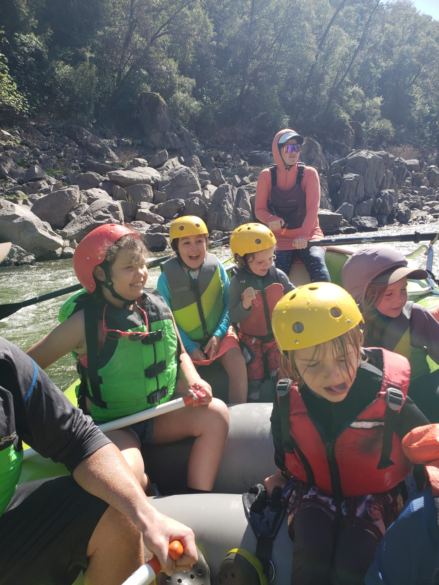
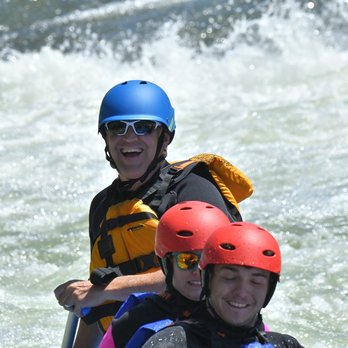

Experience the Thrill of a Lifetime with Our Ultimate Rafting Adventures!

Sign Up for Our Newsletter
The Benefits of Water Rafting
Water rafting offers an exciting adventure that provides a great cardiovascular workout, improving heart health and overall physical fitness. Paddling against the current engages multiple muscle groups, toning arms, shoulders, back, and core muscles. The activity enhances coordination and balance, offering a full-body workout in a dynamic, outdoor setting.
Beyond physical benefits, water rafting is a powerful stress reliever and mental health booster. The adrenaline rush from navigating rapids reduces stress levels, leaving rafters feeling exhilarated. Being surrounded by nature promotes mindfulness and a sense of peace. Additionally, the teamwork involved in rafting fosters camaraderie and strengthens social bonds, making it a rewarding activity for both body and mind.
About Our Website
Our website is dedicated to providing you with all the information you need to embark on an unforgettable water rafting adventure. Whether you're a seasoned rafter or new to the sport, our goal is to help you find the perfect trip that matches your skill level and preferences. From thrilling rapids to scenic floats, we offer detailed guides on various rafting locations, trip durations, difficulty levels, and pricing, ensuring you can plan the ultimate adventure tailored to your needs.
Moreover, our website aims to build a vibrant community of rafting enthusiasts by sharing inspiring stories, helpful tips, and engaging content. Join us as we explore the exhilarating world of water rafting, connect with fellow adventurers, and discover the beauty of our natural waterways. Together, let's embark on an exciting journey filled with adrenaline, camaraderie, and the awe-inspiring wonders of nature.